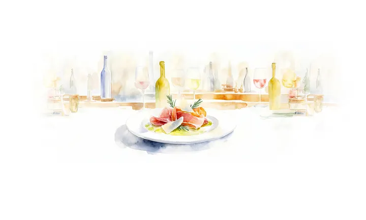

da ven 4 set a dom 13 set · dalle 12:00
Giornate della cucina Alpe-Adria
Titolo originale: Tage der Alpen-Adria Küche
Festival gastronomico con chef ospiti, menu dedicati, incontri e iniziative sulla cucina dell’area Alpe-Adria.
 Indicazioni
Indicazioni
- Costi e prenotazioni
- Prezzi diversi secondo menu o incontro · Prenotazione richiesta per diversi appuntamenti
- Programma
- Programma confermato. Periodo generale confermato; orari e prezzi sono definiti nelle singole schede.
- In caso di maltempo
- Molti appuntamenti sono nei ristoranti; per quelli all’aperto valgono gli avvisi della singola sede.
- Note
- La Via del Gusto del 17–19 settembre è fuori dall’intervallo mostrato.
L’EVENTO
Descrizione completa
Le Giornate della cucina Alpe-Adria riuniscono a Klagenfurt chef ospiti e cuochi locali per raccontare i sapori di Carinzia, Friuli, Veneto, Stiria e Slovenia. I ristoranti del centro propongono piatti e menu che riprendono le radici gastronomiche della regione transfrontaliera.
Il festival dura dal 4 al 20 settembre e comprende cene, piatti d’autore, incontri di cultura gastronomica e appuntamenti con produttori. La grande Via del Gusto è prevista più avanti, dal 17 al 19 settembre, quindi non rientra ancora nelle due settimane mostrate.
Costi, orari e prenotazioni variano per ogni ristorante o appuntamento. La pagina ufficiale raccoglie il programma e rimanda alle singole prenotazioni; è indispensabile scegliere prima l’esperienza desiderata.
IL PROGRAMMA
Programma e orari
Appuntamenti raccolti dalle fonti elencate. Dove manca un orario, non è ancora disponibile in questa scheda.
Dal 4 al 13 settembre
- Menu regionali nei locali aderenti
- Cene e piatti d’autore con chef ospiti
- Incontri dedicati alla cultura gastronomica Alpe-Adria
Dal 17 al 19 settembre · fuori intervallo
- Via del Gusto nel centro storico
INFORMAZIONI UTILI
Prima di partire
- La Via del Gusto del 17–19 settembre è fuori dall’intervallo mostrato.
- Testi tradotti in italiano dalla fonte tedesca.
- Contatti: Prenotazioni dalla pagina ufficiale del festival
ORGANIZZAZIONE